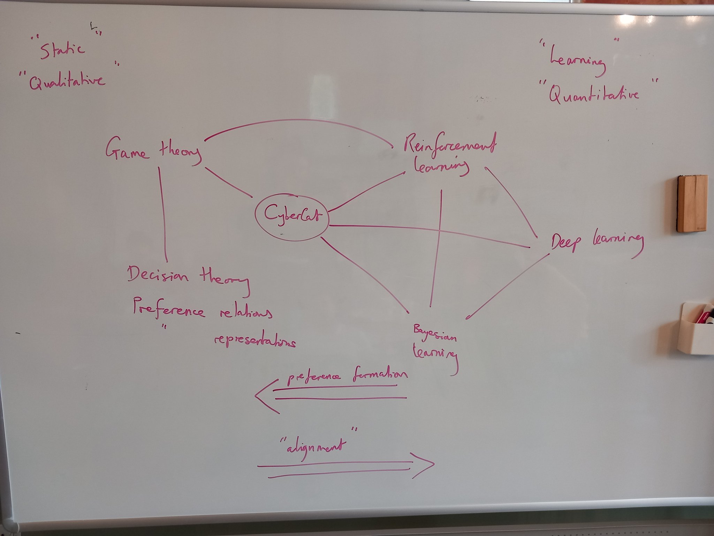

(X-posted on the CyberCat Institute blog)
It’s been a busy few weeks in the world of category theory for deep learning. First of all come the preprint Categorical Deep Learning: An Algebraic Theory of Architectures from authors at Symbolica and DeepMind, including our friend Bruno. And then hot on the heels of the paper, Symbolica raised a big investment round based largely on applications of the ideas in the paper.
The paper is about structured learning and it proposes a big generalisation of geometric deep learning, which is itself a big generalisation of convolutional networks. The general idea is that the data processed by a neural network is not just random data but is the vectorisation of data coming from some real world domain. If your vectors encode an image then there is implicit geometry inherited from the physical world. Geometric deep learning is all about designing architectures that encode geometric invariants of data, specifically in the form of invariant group actions a la Klein’s Erlangenprogramm.
What the paper points out is that the whole of geometric deep learning can be massively generalised from group actions to arbitrary (co)algebras of functors and (co)monads. From there you can easily re-specialise for specific applications. For example, if your training data is vectorisation of source code of a programming language, you can encode the structure of that language’s source grammar into your architecture in a virtually mechanical way.
Suffice to say, I’m very excited about this idea. This could be a watershed moment for applied category theory in general, and it happens to be something that’s right next door to us - the paper heavily uses categories of parametrised morphisms, one of the two building blocks of categorical cybernetics.
Invariant preferences
The first thought I had when I read the paper was invariant preferences. A real AI system is not something that exists in isolation but is something that interacts in some way with the world around it. Even if it’s not a direct “intentional” action such as a robot actuator, the information flow from the AI to the outside world is some kind of action, making the AI an agent. For example, ChatGPT is an agent that acts by responding to user prompts.
Intelligent agents who act can have preferences, the most fundamental structure of decision theory and perhaps also microeconomics. In full generality, “having preferences” means selecting actions in order to bring about certain states of the world and avoid others. Philosophical intention is not strictly required: preferences could have been imposed by the system’s designer or user, one extreme case being a thermostat. AI systems that act on an external world are the general topic of reinforcement learning (although some definitions of RL are too strict for our purposes here).
This gave me a future vision of AI safety where neural network architectures have been designed upfront to statically guarantee (ie. in a way that can be mathematically proven) that the learned system will act in a way that conforms to preferences chosen by the system designer. This is in contrast to, and in practice complements, most approaches to AI safety that involve supervision, interpretation, or “dynamic constraint” of a deployed system - making it the very first line of an overall defense in depth strategy.
A system whose architecture has invariant preferences will act in a way to bring about or avoid certain states of the world, no matter what it learns. A lot of people have already put a lot of thought into the issue of “good and bad world-states”, including very gnarly issues of how to agree on what they should be - what I’m proposing is a technological missing link, how to bridge from that level of abstraction to low-level neural network architectures.
This post is essentially a pitch for this research project, which as of right now we don’t have funding to do. We would have to begin with a deep study of the relationship between preference (the thing that actions optimise) and loss (the thing that machine learning optimises). This is a crossover that already exists: for example in the connection between softmax and Boltzmann distributions, where thermodynamics and entropy enter the picture uninvited yet again. But going forward I expect that categorical cybernetics, which has already built multiple new bridges between all of the involved fields (see this picture that I sketched a year ago), is going to have a lot to say about this, and we’re going to listen carefully to it.

There’s a few category-theoretic things I already have to say, but this post isn’t the best place for it. To give a hint: I suspect that preferences should be coalgebraic rather than algebraic according to the structural invariant learning machinery, because they describe the output of a neural network, as opposed to things like geometric invariant which describe the input.
World-models
The thing that will stop this being easy is that in a world of incomplete information, such as the real world, agents with preferences can only act with respect to their internal model of the outside world. If we’re relying on invariant preferences for safety, they can only be as safe as the agent’s internal model is accurate. We would also have to worry about things like the agent systematically deceiving itself for long-term gain, as many humans do. The good news is that practitioners of RL have spent a long time working on the exact issue of accurately learning world-models, the first step being off-policy algorithms that decouple exploration (ie. world-model learning) from exploitation (ie. optimisation of rewards).
There is also an alternative possibility of manually imposing a human-engineered world-model rather than allowing the agent to learn it. This would be an absolutely monumental task of industrial-scale ontology, but it’s a big part of what Davidad’s project at the UK’s new ARIA agency aims to do. Personally I’m more bullish on learning world-models by provably-accurate RL at the required scale, but your mileage may vary, and in any case invariant preferences will be needed either way.
To wrap up: this is a project we’re thinking about and pursuing funding to actively work on. The “Algebraic Theory of Architecture” paper only dropped a few weeks ago as I’m writing this and opens up a whole world of new possibilities, of which invariant preferences is only one, and we want to strike while the iron is still hot.